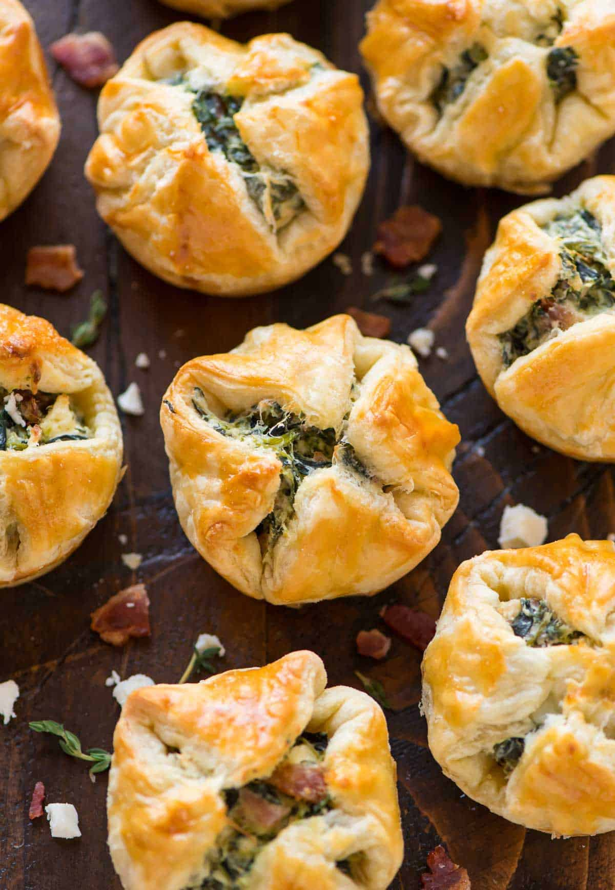

Spinach Puffs
Return Home

Description
These Spinach Puffs will be everyone's favorite breakfast item! They're
the perfect, savory treat for any occasion.
Ingredients
- 4 strips thick-cut bacon
- 8 ounces reduced-fat cream cheese
- 2 large eggs
- 1/2 teaspoon garlic powder
- 1/4 teaspoon black pepper
- 1/4 teaspoon dried oregano
- 10 ounces frozen spinach
- 1/2 cup crumbled feta
- 1/4 cup finely grated Parmesan
- 2 sheets frozen puff pastry
Steps
-
Place racks in the upper and lower thirds of your oven and preheat the
oven to 400 degrees F. Bake bacon according to these directions for
Baked Bacon. Let cool, then chop or crumble into bits. Spray 18 total
cups in two standard muffin tins with nonstick spray.
-
Meanwhile, place the cream cheese pieces in a wide microwave-safe bowl.
Microwave in 10 second bursts until the cream cheese is very soft and
melty but not so hot that it is steaming. Stir in 1 egg, garlic powder,
black pepper, and oregano until well combined.
-
In a separate large mixing bowl, combine the spinach, feta, Parmesan,
and chopped bacon with a fork, breaking apart the spinach. Scrape the
cream cheese mixture on top of the spinach mixture, then stir the
ingredients until well combined. Taste and adjust seasoning as desired.
-
Unfold the first sheet of pastry on a lightly floured surface and gently
roll to remove any creases (it will be a 10- or 11-inch square). Cut the
pastry sheet into 9 even squares (three squares across and three
down—they will be a little more than 3 inches on each side). Line the
wells of the muffin pan with the pastry squares so that the center is
pressed on the bottom of the muffin cups and the corners over hang the
sides (see photo in blog post above). If needed, stretch the squares to
be a bit larger so that they extend all the way up the sides. With a
spoon or small scoop like this one, portion the spinach filling by
heaping tablespoons and place it in the center of each muffin cup,
dividing it evenly among the 18 cups.
-
Bring the four points of each puff pastry square together towards the
center so that they cover the filling, then lightly press them together
in the middle (no need for them to totally stick or seal). In a small
bowl, beat the remaining egg to make an egg wash and brush it over the
tops of the pastry (you will not need the whole egg).
-
Bake the puffs, one muffin tin on each rack, for 21 to 24 minutes, until
puffy and deeply golden, switching the pans' position on the upper and
lower racks halfway through. Allow to cool for 10 minutes, then run a
knife carefully around the edges to gently loosen them. Transfer to a
wire rack. Serve warm or at room temperature.